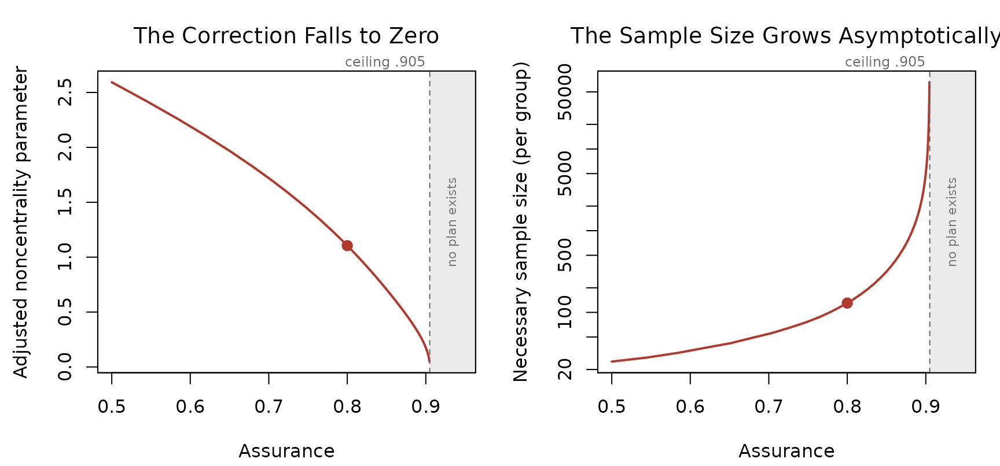

Assurance and the Publication Bias Correction
Ken Kelley, Samantha F. Anderson, and Scott E. Maxwell
Source:vignettes/understanding-assurance.Rmd
understanding-assurance.RmdTwo settings control how aggressively BUCSS corrects the prior
study’s effect: assurance handles uncertainty, and
alpha_prior handles publication bias. This vignette
explains what each one does and shows how the recommended sample size
responds as you turn each knob. The correction is described by Anderson,
Kelley, and Maxwell (2017) and builds on the truncated noncentral
distribution of Taylor and Muller (1996).
What Assurance Means Here
Assurance is the long run proportion of planned studies whose power
reaches the target. Imagine the prior study drawn again and again from
its literature, each draw seen only if it cleared the publication
threshold that alpha_prior describes, and a new study
planned from each one. At the true effect, some of those planned studies
have at least the power you asked for and some fall short; assurance is
the proportion that reach it. If you plan for 80% power with
assurance = .80, about 80% of the studies planned this way
have power of at least 80%.
BUCSS delivers that proportion in a simple way. A planned study
reaches its target power whenever the noncentrality parameter it was
planned from is at or below the true one, because power rises with the
effect (and, apart from rounding the sample size up to a whole number
and from the smallest sample size a planner returns, the design’s own
minimum or the Welch planner’s 10 per group, only then). So BUCSS plans
from the lower limit of a one-sided confidence interval for the prior
study’s noncentrality parameter, at a confidence level equal to the
assurance, computed from the distribution of the prior statistic
truncated at the publication threshold: the value at which a published
prior study would exceed the observed statistic with probability
1 - assurance, which Anderson, Kelley, and Maxwell (2017)
call the 1 - assurance quantile of the likelihood
distribution. An interval at level .80 covers the true parameter in 80%
of repetitions, and in each of those repetitions the plan is large
enough.
The term follows Kelley and Maxwell (2003), who used assurance in sample size planning for the probability that a confidence interval will be no wider than desired. Here it is the probability that the planned study’s power will be at least the desired power.
Assurance: Correcting for Uncertainty
The value of assurance sets how much protection against
uncertainty the plan carries:
-
assurance = .5selects the noncentrality parameter at which the observed statistic sits at the median of the publication-truncated distribution, a median unbiased estimate. This corrects for publication bias only; it does not add any cushion for uncertainty. -
assurance > .5selects instead a one-sided lower confidence bound at that level, which is a smaller, more conservative noncentrality parameter, and therefore a larger planned sample size. The extra sample size is the price of protecting against the chance that the prior estimate was lucky. -
assurance < .5is not recommended (the functions warn), because it implies under a 50% chance of reaching the desired power.
Why does uncertainty call for a larger sample at all? Suppose for a moment there were no publication bias, so the reported effect were equally likely to fall above or below the true value. The two kinds of error do not cancel, because the sample size needed for a given level of power is a nonlinear function of the effect size. An overestimate leads you to plan too small a study and cuts power sharply, while an equally sized underestimate leads you to plan a larger study and raises power by less. Averaged over the ways a noisy estimate can come out, planning at face value loses more power than it gains, so protecting against uncertainty means shifting the plan toward a larger sample. That is exactly what assurance above .5 does.
Watch the recommended per-group sample size climb as assurance rises, for a prior independent t test with t = 3.00 and 20 per group:
assurances <- c(.5, .6, .7, .8, .9)
n_by_assurance <- sapply(assurances, function(a) {
r <- ss_buc_independent_t(t_observed = 3, n = 20, assurance = a, desired_power = .80)
r$value[r$term == "necessary_n_per_group"]
})
data.frame(assurance = assurances, necessary_n_per_group = n_by_assurance)
#> assurance necessary_n_per_group
#> 1 0.5 25
#> 2 0.6 34
#> 3 0.7 55
#> 4 0.8 130
#> 5 0.9 5042The climb is steep. A prior effect this uncertain calls for 130 per group at 80% assurance and over 5000 per group at 90%.
When the Correction Cannot Be Made
Push assurance high enough on a weak or uncertain prior effect and the corrected noncentrality parameter is driven to zero. That is the method telling you the prior effect cannot be estimated with confidence at this level of assurance, so sample size planning is not possible with these settings. The function stops rather than returning a meaningless answer, and the error reports the largest assurance the prior result can support so you know exactly how far to step back:
# Not run: this stops with an informative error.
ss_buc_independent_t(t_observed = 3, n = 20, assurance = .95, desired_power = .80)
#> Error: Sample size planning is not possible with these settings. After
#> correcting the prior study's effect for publication bias and uncertainty
#> at the requested level of assurance, the corrected noncentrality
#> parameter is zero, which means there is not enough information in the
#> prior result to plan the sample size as desired. With this prior result
#> and 'alpha_prior', the largest 'assurance' that still yields a usable
#> plan is about .90; re-run with 'assurance' at or below that value, or
#> raise 'alpha_prior' to lift the ceiling. Re-running at a lower
#> 'assurance' is not free: the plan it returns carries that lower
#> assurance, not the one you first asked for, so the long run proportion
#> of replications reaching your target power falls accordingly.
#> 'alpha_prior' does not change the prior study, which is what it is; it
#> is your assumption about the publication threshold the study's
#> literature faced, so raising it toward 1 assumes less publication bias
#> to undo (for example, 'alpha_prior = .10' assumes the literature's
#> journals would have published a result significant at the .10 level, a
#> more lenient policy than .05, and 'alpha_prior = 1' assumes no
#> publication bias at all). See Anderson, Kelley, and Maxwell (2017) and
#> Anderson and Kelley (2024).The sentence about re-running at a lower assurance is worth dwelling
on, because the first remedy looks cheaper than it is. Assurance is a
promise about the long run: at .90, nine replications in ten reach your
target power. If the prior result cannot support .90 and you re-run at
.80, the plan you get is a perfectly good .80 plan, but it is an .80
plan. You have not recovered the guarantee you wanted; you have accepted
a smaller one in exchange for a feasible study. Raising
alpha_prior is a different kind of move: it does not lower
the guarantee, it changes an assumption about the literature the prior
study came from, and it is defensible exactly to the extent that the
assumption is.
The reported ceiling is exact: the largest assurance a prior result
can support is 1 - p/alpha_prior, where p is the
prior study’s p value (taken at the balanced design the planner
plans from, when the prior study’s groups were unequal). Here that is
about .90, so .95 is out of reach but .90 or below is fine. The two
remedies are exactly the two knobs: lower the assurance to at or below
the reported ceiling, or assume less publication bias by raising
alpha_prior, which lifts the ceiling. When the ceiling is
already at or below the .5 floor, only raising alpha_prior
can help.
Every successful call reports this same ceiling too, printed in the footer as “Largest supportable assurance”, so you can see how much headroom remains before the correction breaks down. The printed result also gives the implied total sample size for per-group and per-cell designs, saving you the multiplication.
The Ceiling, Drawn
The ceiling is easier to see than to read about, so
plot() on any plan draws it. The method re-runs that plan’s
own planner across a range of assurance values and shows what happens on
the way to the wall.
plan <- ss_buc_independent_t(t_observed = 3, n = 20, assurance = .80)
plot(plan)
The point is the shape. Assurance does not degrade gracefully as it
rises: it hits a wall. On the left, the corrected noncentrality
parameter, the quantity the correction actually solves for, falls to
zero. On the right, the sample size that parameter implies grows
asymptotically, and the vertical scale is logarithmic because it spans
three orders of magnitude over a range of assurance a researcher might
plausibly consider. The filled point is the plan itself, at
assurance = .80, and the shaded band is the region where
the planner refuses.
That the sample size is finite everywhere left of the ceiling and undefined everywhere right of it is not an artifact of the software. It is what the prior result can and cannot support.
Read from the same figure, the two remedies in the error message are
the two things you can do to a wall. Lowering assurance moves the point
left, along a curve that is very steep near the ceiling, which is why a
small step back can buy a large reduction in sample size. Raising
alpha_prior moves the wall itself to the right.
The plotted values come back invisibly, so the figure can be redrawn with any other graphics system (the call also draws the sample size panel again, which is not repeated here):
alpha_prior: Modeling Publication Bias
alpha_prior is the significance level a prior result had
to reach to be published (more generally, to reach you): the correction
assumes you see only results with p below
alpha_prior, and it undoes the selection that assumption
implies. Setting alpha_prior = .05 assumes the field
publishes results with p < .05 and truncates the likelihood
at that point. A larger value assumes a more permissive literature and
therefore less severe bias.
Setting alpha_prior = 1 means there is no publication
filter at all. Every p value is at most 1, so any result would
have been published whatever its p value; there is then no
publication bias to correct, and only the correction for uncertainty,
set by assurance, remains. That is appropriate for a prior
study that was never subject to the file drawer, such as a pilot study:
Anderson, Kelley, and Maxwell (2017, p. 1552) note that the level can be
set equal to 1 when publication bias is thought not to apply. So that a
call says what it means, the value may also be written
"No Publication Filter", which is read as 1 and echoed as 1
in the result:
ss_buc_independent_t(t_observed = 3, n = 20,
alpha_prior = "No Publication Filter", assurance = .80,
desired_power = .80)| term | value |
|---|---|
| necessary_n_per_group | 37 |
| total_N | 74 |
| actual_power | 0.801 |
| ncp_adjusted | 2.09 |
| smd_planning | 0.661 |
| t_observed | 3 |
| n | 20 |
| alpha_prior | 1 |
| alpha_planned | 0.05 |
| assurance | 0.8 |
| desired_power | 0.8 |
Design: Independent t test; Sample size unit: per group; Largest supportable assurance: .99
A dissertation study is a similar case, since it is typically
completed and defended regardless of how the results turn out. Even a
pilot study is not guaranteed to be bias-free, though. If the
researchers would have gone on to the full study only after a promising
pilot result, say p < .25, then the pilot faced an informal
filter of its own, and an alpha_prior between .05 and 1 may
describe it better than either extreme. An intermediate value above .05
also suits a prior effect that was not the original study’s focus, such
as a secondary effect reported alongside a study’s main result, which
usually faced a weaker publication filter than the headline effect
did.
Note that alpha_prior is not a confidence level and is
distinct from alpha_planned, which is the Type I error rate
of the study you are designing.
Holding assurance at .80, watch the recommended sample size shrink as we assume less publication bias:
alphas <- c(.05, .10, .20, .50, 1)
n_by_alpha <- sapply(alphas, function(ap) {
r <- ss_buc_independent_t(t_observed = 3, n = 20, alpha_prior = ap, assurance = .80,
desired_power = .80)
r$value[r$term == "necessary_n_per_group"]
})
data.frame(alpha_prior = alphas, necessary_n_per_group = n_by_alpha)
#> alpha_prior necessary_n_per_group
#> 1 0.05 130
#> 2 0.10 64
#> 3 0.20 48
#> 4 0.50 40
#> 5 1.00 37Assuming the strongest bias (alpha_prior = .05) calls
for 130 per group; assuming none (alpha_prior = 1) calls
for 37.
Safeguard Power as a Special Case
Safeguard power (Perugini, Gallucci, & Costantini, 2014) is a way of planning a new study from a prior study’s effect size that guards against the prior estimate being too large. Instead of planning for the effect size the prior study observed, the researcher plans for the lower limit of a two-sided 60% confidence interval around it, a limit that, in repeated sampling, falls below the true effect 80% of the time. The new study then keeps its intended power even if the true effect is somewhat smaller than the one observed. Safeguard power allows for uncertainty in the prior estimate but not for publication bias.
It is BUCSS with alpha_prior = 1 and
assurance = .80, that is, BUCSS without the publication
bias correction, at an assurance of .80, and seeing why shows what each
setting does.
- With
alpha_prior = 1there is no publication filter, since no p value exceeds 1, so the truncation disappears and the truncated distribution of the prior statistic is its ordinary distribution. - At
assurance = .80the adjusted noncentrality parameter is then the value at which the observed statistic sits at the .80 quantile of that distribution: the lower limit of a one-sided 80% confidence interval, which is the lower limit of a two-sided 60% interval, since either way 20% is left below it. - The plan is the smallest sample size whose ordinary power at that value reaches the target, which is what safeguard power prescribes.
For a paired t of 3.00 with 30 pairs, the lower limit of the 60% interval can be found directly by inverting the noncentral t distribution, and the ordinary power analysis at that limit gives the safeguard plan:
t_obs <- 3
N <- 30
# The lower limit of a two-sided interval at confidence level C: the
# noncentrality parameter at which the observed t is the (1 + C)/2 quantile.
lower_limit <- function(C) {
uniroot(function(ncp) pt(t_obs, df = N - 1, ncp = ncp) - (1 + C) / 2,
c(0, 10), tol = 1e-10)$root
}
# Ordinary power of a paired t test with n pairs, at a noncentrality
# parameter stated for the prior study's N pairs.
power_at <- function(n, ncp) {
crit <- qt(.975, df = n - 1)
delta <- ncp * sqrt(n / N)
(1 - pt(crit, df = n - 1, ncp = delta)) + pt(-crit, df = n - 1, ncp = delta)
}
safeguard_n <- function(ncp) {
n <- 2
while (power_at(n, ncp) < .80) n <- n + 1
n
}
limit_60 <- lower_limit(.60)
plan_sg <- ss_buc_paired_t(t_observed = t_obs, N = N, alpha_prior = 1,
assurance = .80)
data.frame(method = c("safeguard power", "BUCSS, alpha_prior = 1"),
ncp = c(limit_60, row_value(plan_sg, "ncp_adjusted")),
necessary_N = c(safeguard_n(limit_60),
row_value(plan_sg, "necessary_N")))
#> method ncp necessary_N
#> 1 safeguard power 2.069878 57
#> 2 BUCSS, alpha_prior = 1 2.069874 57In general, the lower limit of a two-sided interval at confidence
level C is assurance = (1 + C)/2: a 60% interval is
assurance .80, an 80% interval is .90, and a 90% interval is .95. The
same prior shows the correspondence at each level:
levels_C <- c(.60, .80, .90)
data.frame(
confidence_level = levels_C,
assurance = (1 + levels_C) / 2,
interval_lower_limit = sapply(levels_C, lower_limit),
ncp_adjusted = sapply(levels_C, function(C) {
plan <- ss_buc_paired_t(t_observed = t_obs, N = N, alpha_prior = 1,
assurance = (1 + C) / 2)
row_value(plan, "ncp_adjusted")
}))
#> confidence_level assurance interval_lower_limit ncp_adjusted
#> 1 0.6 0.80 2.069878 2.069874
#> 2 0.8 0.90 1.598418 1.598360
#> 3 0.9 0.95 1.209421 1.208942For an F or chi square statistic on more than one degree of
freedom the two agree exactly: there is no sign, and the adjusted
noncentrality parameter is the interval’s lower limit. The differences
that remain all make the BUCSS plan the same as the safeguard plan or
larger, never smaller. One applies to the t tests and to every
effect on one degree of freedom: BUCSS bounds the size of the effect
whatever its sign, so its interval is computed from the magnitude of
t, where the signed interval that safeguard power describes is
computed from t itself. The difference is the chance of a
t at least as extreme in the opposite direction, which is
negligible for a convincing prior result and not for a weak one; it is
why the two columns above differ in their later decimals. It lowers the
adjusted noncentrality parameter, by more as the prior result weakens.
At the safeguard assurance = .80, for a prior on two or
more degrees of freedom and as a percentage of the parameter on the
F scale (on the t scale that the t planners
report, each percentage is about half as large), the magnitude of
t lowers it by less than 0.005% for a prior significant at .01,
by 0.3% to 0.7% at the .05 threshold (0.6% to 0.7% for a prior on 5 or
more degrees of freedom), by about 6% to 7% at .10, and by 29% to 30% at
.15. A t test whose two-sided p value is .20 or more
is declined by BUCSS at assurance = .80, because with no
publication filter the largest assurance a result supports is 1 -
p, while the signed interval’s lower limit stays above zero
until p reaches .40, with plans that run to thousands of
participants.
The sample size a plan needs is close to inversely proportional to the parameter on the F scale, so the plan grows by about the same proportion before it is rounded up to a whole participant. The plan can therefore equal the safeguard plan (7,823 pairs either way for a paired t significant at .01 with 3,000 pairs), be a little larger (20 per group rather than 19 for an independent t at the .05 threshold with 4 per group), or be much larger for a weak prior. The same comparison for a prior of 30 pairs at several two-sided p values shows the growth:
p_prior <- c(.01, .05, .10, .15)
t_prior <- qt(1 - p_prior / 2, df = N - 1)
signed_limit <- sapply(t_prior, function(t) {
uniroot(function(ncp) pt(t, df = N - 1, ncp = ncp) - .80, c(0, 10),
tol = 1e-10)$root
})
plans_1 <- lapply(t_prior, function(t) {
ss_buc_paired_t(t_observed = t, N = N, alpha_prior = 1, assurance = .80)
})
data.frame(
p_value = p_prior,
signed_limit = signed_limit,
ncp_adjusted = sapply(plans_1, row_value, term = "ncp_adjusted"),
safeguard_N = sapply(signed_limit, safeguard_n),
bucss_N = sapply(plans_1, row_value, term = "necessary_N"))
#> p_value signed_limit ncp_adjusted safeguard_N bucss_N
#> 1 0.01 1.8378649 1.8378347 72 72
#> 2 0.05 1.1563764 1.1524878 179 180
#> 3 0.10 0.8223431 0.7936462 351 376
#> 4 0.15 0.6087670 0.5093695 638 910Two further differences can make the BUCSS plan larger. The first is that BUCSS reads an unbalanced prior design as a balanced one. When only the prior total is given and it does not divide evenly among the groups or cells, BUCSS rounds the per-group or per-cell size both down and up and returns the larger plan, which can make the plan larger by up to about the proportion that rounding up adds to the prior size, less than 1/n for a prior study of about n per group or cell, again before the plan is rounded up. When the independent t planner is given two unequal group sizes, it reads the prior as two groups of their harmonic mean, rounded down and up, on those balanced designs’ degrees of freedom rather than on the prior study’s own (the two sizes’ sum less 2). The harmonic mean falls further below half the total the more unequal the sizes, and fewer degrees of freedom lower the limit. For similar sizes this adds little beyond the rounding, but for very unequal sizes it can add much more, most when the harmonic mean is small. A t of 3.00 from groups of 4 and 100, whose harmonic mean is 7.69, shows the difference:
n_prior <- c(4, 100)
# Ordinary power of an independent t test with n per group at a standardized
# mean difference d.
power_ind <- function(n, d) {
crit <- qt(.975, df = 2 * n - 2)
delta <- d * sqrt(n / 2)
(1 - pt(crit, df = 2 * n - 2, ncp = delta)) +
pt(-crit, df = 2 * n - 2, ncp = delta)
}
# Safeguard power with the 60% limit read on 'df' and restated as a
# standardized mean difference by the factor 'to_d'.
safeguard_ind <- function(df, to_d) {
limit <- uniroot(function(ncp) pt(3, df = df, ncp = ncp) - .80, c(0, 10),
tol = 1e-10)$root
n <- 2
while (power_ind(n, limit * to_d) < .80) n <- n + 1
n
}
harmonic <- 2 * prod(n_prior) / sum(n_prior)
plan_unequal <- ss_buc_independent_t(t_observed = 3, n = n_prior,
alpha_prior = 1, assurance = .80)
data.frame(
prior_read_as = c("groups of 4 and 100, df 102", "7 per group, df 12",
"8 per group, df 14", "BUCSS, alpha_prior = 1"),
necessary_n_per_group = c(
safeguard_ind(sum(n_prior) - 2, sqrt(sum(1 / n_prior))),
safeguard_ind(2 * floor(harmonic) - 2, sqrt(2 / floor(harmonic))),
safeguard_ind(2 * ceiling(harmonic) - 2, sqrt(2 / ceiling(harmonic))),
row_value(plan_unequal, "necessary_n_per_group")))
#> prior_read_as necessary_n_per_group
#> 1 groups of 4 and 100, df 102 15
#> 2 7 per group, df 12 16
#> 3 8 per group, df 14 18
#> 4 BUCSS, alpha_prior = 1 18Safeguard power at the prior study’s own design plans 15 per group. Read as two groups of 7, which rounds the harmonic mean down and so favors a smaller plan, the prior already plans 16 on its 12 degrees of freedom; read as two groups of 8 on 14 degrees of freedom it plans 18, which is the BUCSS plan.
The second is the Welch planner’s minimum of 10 per group, which can
make its plan larger. For the regression planners, the equivalence holds
in the frame random_predictors names: with sampled
predictors, both the interval and the power analysis use the
distribution with random predictors.
With alpha_prior below 1, BUCSS applies the same
construction to the publication-truncated distribution, which is what
the publication bias correction adds to safeguard power; and with
assurance = .5 it plans from the median unbiased estimate
rather than from a lower limit.
Seeing the Assurance Claim Exercised
Everything above is a claim about a long run that a user planning one
study never gets to watch. ss_buc_sensitivity() lets you
watch it on your own numbers. It reads the design and the planning
inputs off a plan, simulates prior studies of that design from a true
effect you name, discards the ones a literature would not have
published, runs the same planner on each survivor, and reports what
happened.
You have to name the true effect; there is deliberately no default,
because defaulting to the corrected estimate would ask the method to
grade its own answer. The value goes on the same scale as the plan’s own
ncp_adjusted, so that number is the natural anchor.
plan <- ss_buc_paired_t(t_observed = 3, N = 30, assurance = .80)
ncp <- plan$value[plan$term == "ncp_adjusted"]
ncp
#> [1] 0.9753901
audit <- ss_buc_sensitivity(plan, true_ncp = ncp, replications = 2000,
seed = 2017)
audit
#> term value
#> true_ncp 0.975
#> ncp_adjusted 0.975
#> replications 2000
#> publication_rate 0.157
#> refusal_rate 0.692
#> attainment 0.356
#> attainment_mcse 0.0193
#> attainment_with_refusals 0.802
#> attainment_with_refusals_mcse 0.00892
#> size_at_true_effect 250
#> size_q25 61.8
#> size_median 138
#> size_q75 434
#>
#> Design: Dependent (paired) t test
#> Sample size unit: number of pairs
#> Requested assurance: .80
#> Target power: .80Two attainment rates are reported, and the gap between them is the
point. attainment_with_refusals lands on the requested
assurance within simulation error (here .802, with a Monte Carlo
standard error of .0089), because that is the quantity the guarantee is
about: a refusal counts as attaining, since declining to plan is the
limiting case of an arbitrarily conservative plan.
attainment counts only the prior studies for which a plan
was actually issued, and it is lower, often much lower: here .356 (Monte
Carlo standard error .019), because the method refuses .692 (Monte Carlo
standard error .01) of the simulated published prior results as too weak
to plan from. That is what a user experiences, and it is the visible
price of a method that refuses rather than guesses. Its expected value
is (assurance - refusal_rate)/(1 - refusal_rate).
The most useful thing to do with this function is to run it more than once, at the corrected estimate and at values below it, and watch how fast the attainment falls when the truth is smaller than the correction assumed. What it cannot tell you is whether the distributional assumption behind a design is right, since the simulation shares that assumption.
Practical Guidance
- Make the corrections as minimal as you can defend. Each knob trades a modeling assumption for a smaller sample, and overstating either bias or uncertainty inflates the study unnecessarily.
-
assurance = .80is a common, defensible choice. Reserve very high assurance for cases where a failed replication is especially costly, and expect the required sample size to grow quickly. - Choose
alpha_priorto reflect the publishing threshold in the prior study’s field. Usealpha_prior = 1only when you genuinely believe the prior study escaped publication bias.
References
Anderson, S. F., & Kelley, K. (2024). Sample size planning for replication studies: The devil is in the design. Psychological Methods, 29, 844–867. https://doi.org/10.1037/met0000520
Anderson, S. F., Kelley, K., & Maxwell, S. E. (2017). Sample-size planning for more accurate statistical power: A method adjusting sample effect sizes for publication bias and uncertainty. Psychological Science, 28, 1547–1562. https://doi.org/10.1177/0956797617723724
Kelley, K., & Maxwell, S. E. (2003). Sample size for multiple regression: Obtaining regression coefficients that are accurate, not simply significant. Psychological Methods, 8, 305–321. https://doi.org/10.1037/1082-989X.8.3.305
Perugini, M., Gallucci, M., & Costantini, G. (2014). Safeguard power as a protection against imprecise power estimates. Perspectives on Psychological Science, 9, 319–332. https://doi.org/10.1177/1745691614528519
Taylor, D. J., & Muller, K. E. (1996). Bias in linear model power and sample size calculation due to estimating noncentrality. Communications in Statistics: Theory and Methods, 25, 1595–1610. https://doi.org/10.1080/03610929608831787